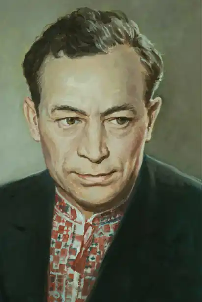

Народився 11 вересня 1912 року в селі Орлику (нині Кобеляцький район, Полтавська область). Учасник німецько-радянської війни.
Після Першої світової війни та революції з 8-ми років безпритульник. Пізніше знайшов рідного дядька вчителя на Полтавщині, пішов до школи. Захопився читанням, особливо книгами Джека Лондона. Під впливом його творів вирішив описати своє життя в колі безпритульних дітей. Оповідання сподобалося дядькові і той у 1925 році, відвіз хлопчика до Харкова, де показав його письменнику Івану Сенченку, який похвально відгукнувся про перший літературний досвід Ткача і порадив юнакові "не випускати пера з рук".
Після закінчення школи Дмитро Ткач працював горновим та пресувальником на Дружківському металургійному заводі на Донбасі, потім був співробітником заводської багатотиражки. Служив у Військово-Морському флоті СРСР. 1940 року закінчив Криворізький учительський інститут. Учасник Великої Великої Вітчизняної війни. З 1941 по 1945 роки — моряк, потім командир відділення радистів, старшина сторожового корабля "Шторм" Чорноморського флоту. До війни і перші роки по війні працював у редакції криворізької газети "Червоний гірник", потім у дніпропетровській газеті "Зоря", заступник головного редактора журналу "Дніпро", головного редактора видавництва "Молодь", директор видавництва дитячої літератури "Веселка". Збірка оповідань і повість "Плем'я дужих" (1948), повісті "Небезпечна зона" (1958), "Чорне сальто" (1962), романи "Плем'я дужих" (1957), "Арена" (1960), збірка прози "Спокійне море" (1974), оповідання й повісті для дітей. Кавалер ордена Вітчизняної війни 2-го ступеня та ордена Червоної Зірки. Наприкінці життя страждав від невиліковної хвороби очей. Помер 1993 року в Києві. Похований на Байковому цвинтарі.